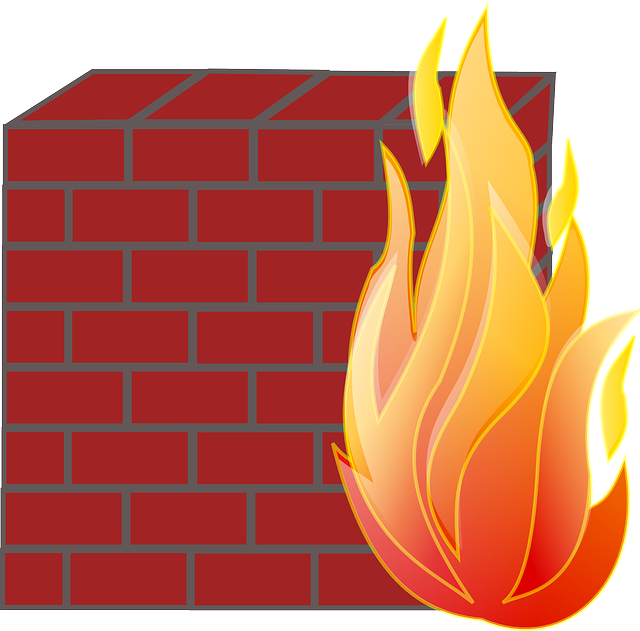

We believe security software like Kicksecure needs to remain Open Source and independent. Would you help sustain and grow the project? Learn more about our 14 year success story and maybe DONATE!
Air Gapped OpenPGP KeyAdvanced DocumentationSystem identity camouflagePrevious page: Air Gapped OpenPGP KeyIndex page: Advanced DocumentationNext page: System identity camouflageSOCKS Firewalling

SOCKS proxies are commonly used to relay network traffic, often for privacy or censorship circumvention purposes. While the Netfilter packet filtering framework in Linux operates at the network layer, the SOCKS protocol operates at the higher session layer. This article explains the challenges of filtering SOCKS traffic using Netfilter and explores potential solutions, including deep packet inspection techniques and third-party tools.
SOCKS Firewalling using Netfilter Introduction
Netfilter (nftables, nft) IP filtering
operates at the network layer (OSI Layer 3), while the SOCKS5 protocol
operates at the session layer (OSI Layer 5). Netfilter would only see
SOCKS traffic from the application to the Tor SocksPort.
Netfilter, by default in Linux, does not understand and cannot easily
filter SOCKS traffic. This would require deep packet inspection (DPI)
because the SOCKS protocol uses a DST.ADDR, which contains
the domain name or IP address, and this information is encapsulated
within the IP packet's payload.
To explain further:
1. Netfilter (nftables) is a packet filtering framework in the Linux kernel that operates at the network layer (OSI Layer 3). It can filter packets based on IP addresses, ports, and other network-level information.
2. The SOCKS protocol is a communication protocol that operates at the session layer (OSI Layer 5). It is commonly used for relaying network traffic through proxy servers.
3. When an application uses the SOCKS protocol to connect to a Tor
SocksPort, Netfilter can only see the network-level
information, such as the source and destination IP addresses and ports.
It cannot directly inspect the SOCKS protocol headers and data, which
are encapsulated within the IP packet's payload.
4. The SOCKS protocol includes a DST.ADDR field, which
contains the domain name or IP address of the intended destination. This
information is necessary for the SOCKS proxy server to establish the
connection on behalf of the client.
5. To filter SOCKS traffic based on the DST.ADDR
information, Netfilter (nftables) would need to perform deep packet
inspection (DPI). DPI involves examining the contents of the IP packet's
payload to extract and analyze the application-layer protocol headers
and data.
6. Without DPI capabilities, Netfilter (nftables) cannot easily
filter SOCKS traffic based on the DST.ADDR information, as
this data is not readily available at the network layer.
In summary, due to the different layers at which Netfilter (nftables)
and the SOCKS protocol operate, filtering SOCKS traffic based on the
DST.ADDR information requires deep packet inspection
capabilities, which are not natively available in Netfilter (nftables)
by default. Additional tools or techniques specifically designed for DPI
would be necessary for this purpose.
Netfilter Payload Based Filtering
 Advanced users only!
Advanced users only!
Unsupported. This is for your inspiration only. AI generated. Only a promising approach. Not a complete solution. Untested.
#!/usr/sbin/nft -f define socks_filter { payload pattern "^0x05 0x01 0x00 0x03 0x04" @2 "^0x08 0x08 0x08 0x08" @10 drop } add rule inet filter output meta l4proto tcp socks_filterThis script appears to be a set of rules for the nftables packet filtering framework in Linux.
The first line is a shebang, which tells the system to execute the script using the `/usr/sbin/nft` binary with the `-f` option, which reads the rules from the script file.
define socks_filter { payload pattern "^0x05 0x01 0x00 0x03 0x04" @2 "^0x08 0x08 0x08 0x08" @10 drop }This block defines a rule chain named `socks_filter`. The `payload pattern` statement matches specific byte patterns in the packet payload.
- `"^0x05 0x01 0x00 0x03 0x04"` matches the initial SOCKS handshake request (version 5, connect, reserved, domain name, IPv4 address).
- `@2` specifies that the pattern should be matched starting from the second byte of the payload.
- `"^0x08 0x08 0x08 0x08"` matches an IPv4 address of `8.8.8.8`.
- `@10` specifies that the second pattern should be matched starting from the 10th byte of the payload.
- `drop` means that if both patterns are matched, the packet should be dropped.
add rule inet filter output meta l4proto tcp socks_filterThis line adds a new rule to the `inet filter output` chain for the TCP protocol, and hooks the `socks_filter` chain to this rule.
In summary, this script defines a rule to drop outgoing TCP packets that appear to be SOCKS5 connection requests to the IP address `8.8.8.8`. This could be used to block certain types of SOCKS proxy connections on the system.AI generated using Claude 3 Sonnet.
Other Potential Solutions
- DPI (Deep Package Inspection)
- Netfilter Payload Based Filtering
- nDPI
- a SOCKS proxy with filtering capabilities
- python NetfilterQueue
Categories: Documentation